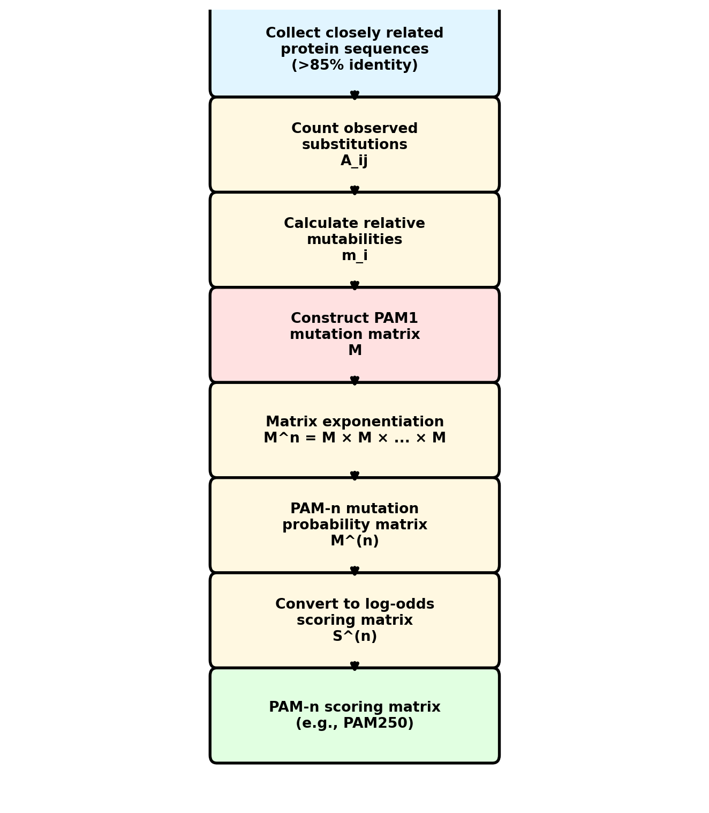
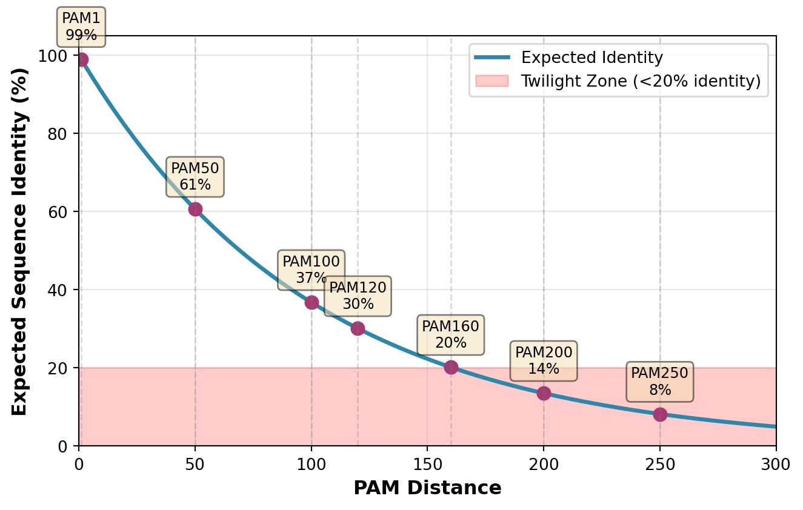
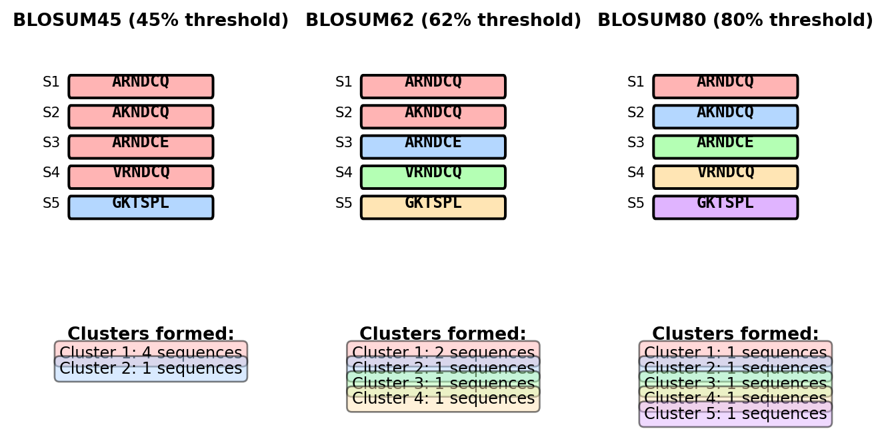
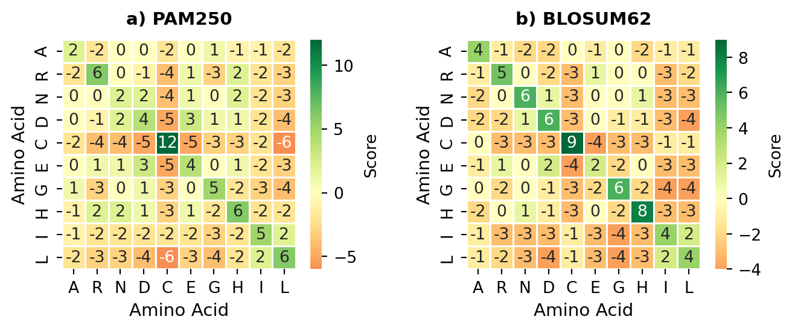
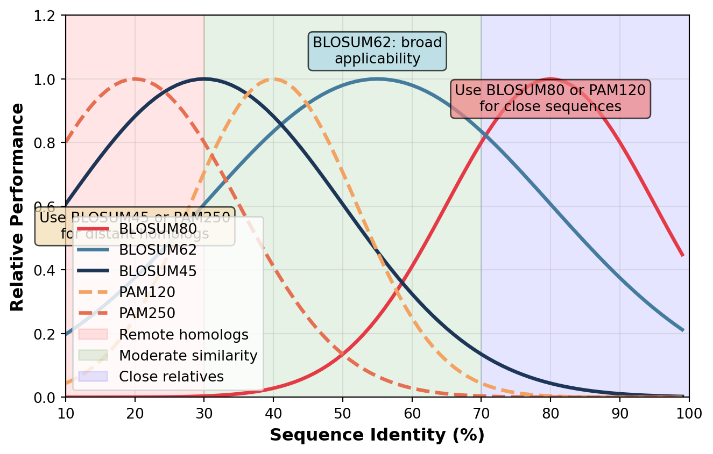

41 Scoring Matrices
Introduction to Protein Sequence Scoring
Here’s the thing about protein sequence comparison—it’s vastly more complex than DNA alignment, and that complexity is actually what makes it interesting. When you’re comparing DNA sequences, you’re working with just four nucleotides: \(A\), \(C\), \(G\), and \(T\). Pretty straightforward, right? But proteins? They’re built from twenty different amino acids, and here’s where it gets fascinating: each of those amino acids has its own unique chemical personality.
Some are hydrophobic and want to hide from water, some are charged and love interacting with their surroundings, some are tiny and flexible, others are bulky and rigid. These chemical properties aren’t just biochemical trivia—they fundamentally shape how proteins evolve. When a mutation changes one amino acid to another during evolution, whether that change gets accepted or rejected depends heavily on whether the new amino acid can do the same job as the old one. A mutation that swaps one hydrophobic amino acid for another similar hydrophobic amino acid? Usually fine. A mutation that puts a charged amino acid where a hydrophobic one used to be? That’s probably going to break something. This is why comparing protein sequences requires sophisticated scoring schemes that capture these subtle patterns of amino acid replacement. We can’t just score all matches the same and all mismatches the same—we need scoring systems that understand that leucine to isoleucine is a much more reasonable substitution than tryptophan to aspartic acid. The whole challenge of protein sequence alignment boils down to quantifying these substitution patterns in a way that reflects what actually happens during evolution.
Evolution as Nature’s Experiment in Protein Engineering
Think of evolution as a massive, billion-year experiment in protein engineering. Every time a mutation occurs in a protein-coding gene, nature tests whether that change works. If the new amino acid does the job well enough, the organism survives and reproduces, passing that mutation along. If the change breaks something critical, natural selection eliminates it. This process has been running for billions of years, generating an enormous dataset of which amino acid substitutions work and which don’t. When you compare homologous proteins across different species—say, hemoglobin in humans versus hemoglobin in mice—you’re essentially reading the results of this experiment. The substitutions you observe are the ones that passed nature’s filter. The substitutions you don’t see? Those are the ones that failed. What’s remarkable is that these patterns aren’t random. Conservative substitutions—those swapping one amino acid for another with similar chemical properties—show up all the time because they rarely break anything important. Leucine to valine? Both are hydrophobic, both are roughly similar in size, so this substitution usually preserves protein structure and function. Serine to threonine? Both are small, both are polar, both can form similar hydrogen bonds—again, usually fine. But radical substitutions between chemically different amino acids are rare in the evolutionary record. Try putting an aspartic acid (charged, hydrophilic, small) where a tryptophan (uncharged, hydrophobic, bulky) used to be, and you’ll probably destroy the protein’s ability to fold correctly or carry out its function. Natural selection acts as a filter, keeping the mutations that maintain or improve function while ruthlessly eliminating the ones that cause problems. The protein sequences we observe today represent the survivors—the accumulated substitutions that were functionally acceptable over evolutionary time.
Quantifying Substitution Patterns
So we’ve established that evolution generates useful data about amino acid substitutions. But how do we turn those observations into actual numbers we can use for sequence alignment? This is where things get mathematically interesting, because the process isn’t as simple as just counting how often each substitution appears. We need to address several subtle challenges. First challenge: distinguishing real evolutionary relationships from coincidence. If you see two sequences both have leucine at the same position, is that because they share a common ancestor (homology), or is it just random chance? Leucine is pretty common, so you’d expect to see it align with itself sometimes even in completely unrelated sequences. Second challenge: accounting for the fact that different amino acids have different background frequencies. Tryptophan is rare in proteins generally—it makes up maybe \(1\%\) of all amino acids. Leucine, on the other hand, is abundant at around \(10\%\). So you’ll naturally see more leucine-leucine alignments than tryptophan-tryptophan alignments even in random sequences, just because there’s more leucine to go around. We need to correct for these frequency differences if we want to identify substitutions that are genuinely meaningful rather than just common. Third challenge: as evolutionary distance increases, you get multiple substitutions happening at the same position. What started as an alanine might have mutated to glycine, then later to serine. When we compare these distant sequences, we only see the beginning and end states, not the intermediate steps. We need statistical methods that account for this “saturation” effect. The standard approach to all these challenges involves transforming raw substitution counts into log-odds scores. Here’s the key equation:
\[S(a,b) = \log\left(\frac{q_{ab}}{p_a \cdot p_b}\right)\]
where \(q_{ab}\) represents the observed frequency of amino acids \(a\) and \(b\) being aligned in homologous sequences, while \(p_a\) and \(p_b\) represent the background frequencies of amino acids \(a\) and \(b\) respectively. The numerator \(q_{ab}\) is what we actually observe in related proteins. The denominator \(p_a \cdot p_b\) is what we’d expect to see if sequences were just random strings of amino acids with no evolutionary relationship. If \(q_{ab}\) is larger than \(p_a \cdot p_b\), the substitution occurs more often than chance would predict, so the log gives us a positive score—evidence of an evolutionary relationship. If \(q_{ab}\) is smaller than expected, we get a negative score—this substitution is rare and penalized. This formulation elegantly captures the core insight: substitutions that occur frequently in evolutionarily related sequences, beyond what random chance would produce, are the ones that should get positive scores in our alignment algorithm.
The Need for Multiple Scoring Matrices
Here’s something that might surprise you: there’s no such thing as a single “best” substitution matrix. The substitution patterns you observe between closely related proteins look completely different from those you see between distant relatives, and that means we need different scoring matrices optimized for different evolutionary distances. Let me explain why this matters. Imagine comparing human and chimpanzee hemoglobin—these proteins are extremely similar because humans and chimps diverged recently. In closely related sequences like these, most positions are still identical, and the few substitutions you do see are almost always conservative: leucine to isoleucine, serine to threonine, that kind of thing. These are the “easy” substitutions that happen readily. Now imagine comparing human hemoglobin to sea urchin hemoglobin. These organisms diverged hundreds of millions of years ago, so their sequences have accumulated many more changes. You still see some conservative substitutions, but you also see more radical changes, multiple substitutions at the same position, and the whole picture becomes much more complicated. If you use a scoring matrix optimized for closely related sequences (like BLOSUM80 or PAM40) to compare distant sequences, you’ll fail to detect the relationship because you’re being too picky—you’re penalizing substitutions that are perfectly normal at that evolutionary distance. Conversely, if you use a matrix optimized for distant sequences (like BLOSUM45 or PAM250) to compare closely related sequences, you’ll be too permissive, accepting substitutions and gaps where you should demand near-perfect matches. This trade-off between sensitivity and specificity is fundamental to sequence analysis. Matrices for close relationships are stringent—they strongly penalize most substitutions and reward only highly conservative changes. Great for distinguishing orthologs from paralogs in closely related species, terrible for detecting remote homologs. Matrices for distant relationships are permissive—they accept a much broader range of substitutions. Great for finding distant relatives, but they’ll generate false positives if you use them on closely related sequences. The practical upshot is that choosing the right matrix depends on knowing or estimating the evolutionary distance between your sequences, and having a whole toolkit of matrices optimized for different distances gives you the flexibility to handle whatever comparison you’re doing.
PAM Matrices: Modeling Evolution Through Time
The Evolutionary Model Behind PAM
The Point Accepted Mutation (PAM) matrices represent one of the foundational achievements in computational biology, and they come with a fascinating origin story. Back in the 1970s, Margaret Dayhoff—often called the founding mother of bioinformatics—had a visionary idea: what if we could capture the patterns of protein evolution mathematically and use those patterns to improve sequence analysis? This was revolutionary thinking at a time when most people were still figuring out how to sequence proteins at all. Dayhoff didn’t just develop PAM matrices; she built the first comprehensive protein sequence database (the Atlas of Protein Sequence and Structure), established fundamental methods for sequence comparison, and basically laid the groundwork for the entire field of bioinformatics. Working with punch cards and early computers, she meticulously collected and analyzed protein sequences to extract the evolutionary signal hidden in substitution patterns. Her insight was that evolution leaves quantifiable traces, and if you could measure those traces carefully enough, you could build mathematical models that would let you detect evolutionary relationships that might not be obvious from casual inspection. The PAM model itself rests on a clear conceptual foundation: protein evolution happens through point mutations (changes in individual nucleotides that alter amino acids), and some of these mutations get “accepted” by natural selection while others get rejected. The key word here is “accepted”—we’re not counting all mutations that occur, just the ones that persist in populations because they don’t break the protein badly enough to be lethal. This distinction matters because it means PAM matrices capture functional constraints, not just mutational processes. The basic unit of measurement is the PAM unit itself: one PAM unit corresponds to an evolutionary distance where, on average, one accepted point mutation occurs per 100 amino acid positions. So if two sequences are separated by 1 PAM unit of evolution, you’d expect about \(1\%\) of their amino acid positions to differ. Notice that this measures evolutionary time in terms of observed changes, not absolute time—\(1\%\) divergence might take a million years in a slowly evolving protein or just thousands of years in a rapidly evolving one.
The mathematical machinery of PAM matrices starts with a mutation probability matrix \(M\). Each element \(M_{ij}\) represents the probability that amino acid \(i\) mutates to amino acid \(j\) over one PAM unit of evolutionary time. The diagonal elements \(M_{ii}\) tell you the probability of no change—the chance that amino acid \(i\) stays as \(i\). The off-diagonal elements capture substitution probabilities. Since these are probabilities and something has to happen (either change or no change), they must sum to 1:
\[ \sum_{j=1}^{20} M_{ij} = 1 \]
for each amino acid \(i\). This matrix \(M\) is what we call a stochastic matrix, and it encodes the fundamental evolutionary process—the transition probabilities from one amino acid to another over a small time step.
Constructing PAM Matrices from Data
Building a PAM matrix starts with collecting the right kind of data—and this is where Dayhoff’s work was particularly heroic. Remember, this was the 1970s. No automated DNA sequencers, no massive sequence databases, no computational infrastructure. Dayhoff and her team manually collected and aligned protein sequences, working with punch cards and early computers that had less computing power than your phone. The key methodological decision was to focus on very closely related protein sequences—specifically, proteins sharing more than \(85\%\) sequence identity. Why so stringent? Because when sequences are that similar, you can be confident that each difference you observe represents a single substitution event. If you used more divergent sequences, you’d risk observing positions that had mutated multiple times, and that would mess up your statistics—you’d be looking at the endpoint of a complex chain of substitutions rather than individual mutation events. This high-similarity threshold was critical for getting accurate estimates of the basic substitution rates. Dayhoff’s insistence on biological accuracy over computational convenience set standards for rigor that still guide bioinformatics research today. Once you have your aligned sequences, the construction process involves some straightforward counting followed by some clever mathematics. Let \(A_{ij}\) represent the number of times you observe amino acid \(i\) mutate to amino acid \(j\) in your dataset. From these counts, you calculate the relative mutability of each amino acid—essentially, how mutation-prone each amino acid is:
\[m_i = \frac{\sum_{j \neq i} A_{ij}}{n_i \cdot c}\]
where \(n_i\) is the total occurrence of amino acid \(i\) in your dataset, and \(c\) is a scaling constant chosen so that the average probability of mutation equals \(0.01\) (which is what defines 1 PAM unit). Some amino acids are inherently more mutable than others—maybe because their codons are more susceptible to certain mutations, or because changes to them are more often tolerated functionally. This formula captures that variation. Once you have the mutabilities, you construct the actual mutation probability matrix \(M\):
\[ M_{ij} = \begin{cases} \frac{A_{ij}}{\sum_{k} A_{ik}} \cdot m_i & \text{if } i \neq j \\ 1 - m_i & \text{if } i = j \end{cases} \]
The off-diagonal elements tell you: given that amino acid \(i\) is going to mutate, what’s the probability it mutates to \(j\) specifically? The diagonal elements tell you the probability of no change. This \(M\) matrix represents evolution over a tiny time step—just one PAM unit. To model longer evolutionary distances, we’ll use a clever mathematical trick based on the Markov property.

Extrapolating to Higher PAM Distances
Here’s where the PAM framework becomes really powerful: we can take our PAM1 matrix (built from very closely related sequences) and extrapolate it to model much longer evolutionary distances. The trick is beautifully simple. Remember that \(M\) is a matrix of transition probabilities over one PAM unit. What if you want to know what happens over \(n\) PAM units? You just multiply the matrix by itself \(n\) times:
\[ M^{(n)} = M^n \]
That’s it. Matrix exponentiation. This works because of the Markov property—the probability of being in state \(j\) after \(n\) steps is the sum over all possible intermediate paths, and matrix multiplication automatically computes exactly that. So \(M^{(250)}\) tells you the transition probabilities after 250 PAM units of evolution. This is PAM250, one of the most commonly used matrices, and it corresponds to sequences where approximately \(80\%\) of positions have experienced at least one accepted mutation. At that evolutionary distance, you’re comparing quite distantly related proteins—think human versus yeast versions of the same protein. Once you have \(M^{(n)}\), you convert it into actual alignment scores using the log-odds formula:
\[ S^{(n)}_{ij} = 10 \cdot \log_{10}\left(\frac{M^{(n)}_{ij}}{f_j}\right) \]
where \(f_j\) is the background frequency of amino acid \(j\). The factor of 10 and the use of base-10 logarithms are historical quirks from the pre-computer era—they yield integer scores that were convenient for manual calculations. There’s nothing fundamental about them; some modern matrices use different scaling factors or base-2 logarithms. What matters is the ratio inside the log: how much more likely is this substitution in related proteins compared to random chance? One consequence of this model is that sequence identity decreases exponentially with PAM distance:
\[ \text{Identity} = \sum_{i=1}^{20} f_i \cdot M^{(n)}_{ii} \]
The diagonal elements \(M^{(n)}_{ii}\) represent the probability that amino acid \(i\) is still \(i\) after \(n\) PAM units, weighted by how common that amino acid is. As \(n\) increases, these probabilities decrease, and sequence identity drops. At PAM250, you’re down to about \(20\%\) identity—close to what we call the “twilight zone” of sequence comparison, where it becomes very hard to distinguish real homology from random similarity.

Worked Example: Constructing a PAM1 Matrix
To illustrate the construction of PAM matrices, let’s work through a simplified example using a subset of amino acids. Consider a dataset of closely related sequences (>85% identity) where we observe the following substitution counts between four amino acids (A, G, V, L):
Step 1: Count observed substitutions
From our aligned sequences, we observe: - A → G: 30 substitutions - A → V: 10 substitutions - A → L: 5 substitutions - G → V: 8 substitutions - G → L: 4 substitutions - V → L: 25 substitutions
Total occurrences in dataset: - A: 1000 positions - G: 800 positions - V: 600 positions - L: 900 positions
Step 2: Calculate relative mutabilities
The relative mutability \(m_i\) for each amino acid represents its propensity to mutate:
\[ m_A = \frac{30 + 10 + 5}{1000 \cdot c} = \frac{45}{1000c} \]
\[ m_G = \frac{30 + 8 + 4}{800 \cdot c} = \frac{42}{800c} \]
\[ m_V = \frac{10 + 8 + 25}{600 \cdot c} = \frac{43}{600c} \]
\[ m_L = \frac{5 + 4 + 25}{900 \cdot c} = \frac{34}{900c} \]
We choose \(c\) such that the average mutability equals 0.01 (1 PAM unit). The average mutability weighted by amino acid frequency is:
\[ \bar{m} = \frac{1000 \cdot m_A + 800 \cdot m_G + 600 \cdot m_V + 900 \cdot m_L}{3300} = 0.01 \]
Solving for \(c\): \(c = 4.8\)
This gives us: - \(m_A = 0.0094\) - \(m_G = 0.0109\) - \(m_V = 0.0149\) - \(m_L = 0.0079\)
Step 3: Construct the PAM1 mutation probability matrix
The mutation probability matrix \(M\) has diagonal elements representing no change and off-diagonal elements representing substitutions:
\[ M_{AA} = 1 - m_A = 0.9906 \]
\[ M_{AG} = \frac{30}{45} \cdot m_A = 0.0063 \]
\[ M_{AV} = \frac{10}{45} \cdot m_A = 0.0021 \]
\[ M_{AL} = \frac{5}{45} \cdot m_A = 0.0010 \]
Following this pattern for all amino acids:
\[ M = \begin{pmatrix} 0.9906 & 0.0063 & 0.0021 & 0.0010 \\ 0.0078 & 0.9891 & 0.0021 & 0.0010 \\ 0.0029 & 0.0031 & 0.9851 & 0.0089 \\ 0.0013 & 0.0011 & 0.0070 & 0.9921 \end{pmatrix} \]
Step 4: Calculate PAM250 by matrix exponentiation
To obtain PAM250, we calculate \(M^{250}\):
\[ M^{250} = \begin{pmatrix} 0.189 & 0.174 & 0.275 & 0.362 \\ 0.217 & 0.221 & 0.269 & 0.293 \\ 0.297 & 0.242 & 0.224 & 0.237 \\ 0.323 & 0.211 & 0.199 & 0.267 \end{pmatrix} \]
Step 5: Convert to log-odds scoring matrix
Using background frequencies \(f_A = 0.303\), \(f_G = 0.242\), \(f_V = 0.182\), \(f_L = 0.273\):
\[ S_{AA} = 10 \log_{10}\left(\frac{0.189}{0.303}\right) = -2.0 \]
\[ S_{AG} = 10 \log_{10}\left(\frac{0.174}{0.242}\right) = -1.4 \]
\[ S_{AV} = 10 \log_{10}\left(\frac{0.275}{0.182}\right) = 1.8 \]
\[ S_{AL} = 10 \log_{10}\left(\frac{0.362}{0.273}\right) = 1.2 \]
The complete PAM250 scoring matrix for our simplified example:
\[ S^{(250)} = \begin{pmatrix} -2 & -1 & 2 & 1 \\ -1 & -1 & 2 & 0 \\ 2 & 1 & 1 & -1 \\ 1 & -1 & -1 & 0 \end{pmatrix} \]
This simplified example demonstrates how evolutionary observations are transformed into practical scoring matrices. The positive scores (e.g., A-V: 2) indicate substitutions occurring more frequently than expected by chance, while negative scores indicate rare substitutions.
Python Implementation: PAM Matrix from Pairwise Alignment
To make the PAM construction process more concrete, let’s implement it in Python using a single long pairwise alignment. This example shows how to extract substitution counts from an alignment and construct a PAM1 matrix.
import numpy as np
from collections import Counter, defaultdict
def extract_substitutions(seq1, seq2):
"""
Extract substitution counts from a pairwise alignment.
Assumes sequences are aligned and of equal length.
"""
substitutions = defaultdict(int)
aa_counts = Counter()
for a1, a2 in zip(seq1, seq2):
if a1 != '-' and a2 != '-': # Skip gap positions
aa_counts[a1] += 1
if a1 != a2:
# Store substitutions symmetrically
pair = tuple(sorted([a1, a2]))
substitutions[pair] += 1
return substitutions, aa_counts
def compute_pam1_matrix(seq1, seq2):
"""
Compute a PAM1 scoring matrix from a pairwise alignment.
"""
# Example sequences (representing >85% identity alignment)
# In practice, you would use multiple alignments
# Extract substitutions and counts
substitutions, aa_counts = extract_substitutions(seq1, seq2)
# Get unique amino acids
amino_acids = sorted(set(aa_counts.keys()))
n_aa = len(amino_acids)
aa_to_idx = {aa: i for i, aa in enumerate(amino_acids)}
# Calculate total positions and substitution matrix A
A = np.zeros((n_aa, n_aa))
for (aa1, aa2), count in substitutions.items():
i, j = aa_to_idx[aa1], aa_to_idx[aa2]
A[i, j] = count / 2 # Divide by 2 because we count each pair once
A[j, i] = count / 2 # Make symmetric
# Calculate relative mutabilities
total_positions = sum(aa_counts.values())
mutabilities = np.zeros(n_aa)
for i, aa in enumerate(amino_acids):
if aa_counts[aa] > 0:
mutabilities[i] = np.sum(A[i, :]) / aa_counts[aa]
# Scale to 1 PAM unit (1% accepted mutations)
scaling_factor = 0.01 / np.mean(mutabilities[mutabilities > 0])
mutabilities *= scaling_factor
# Construct mutation probability matrix M
M = np.zeros((n_aa, n_aa))
for i in range(n_aa):
if mutabilities[i] > 0:
# Off-diagonal elements: mutation probabilities
for j in range(n_aa):
if i != j and np.sum(A[i, :]) > 0:
M[i, j] = (A[i, j] / np.sum(A[i, :])) * mutabilities[i]
# Diagonal element: probability of no change
M[i, i] = 1 - mutabilities[i]
else:
M[i, i] = 1.0 # No mutations observed
# Calculate background frequencies
total_aa = sum(aa_counts.values())
frequencies = np.array([aa_counts[aa] / total_aa for aa in amino_acids])
# Convert to log-odds scoring matrix
# Using PAM convention: S = 10 * log10(M[i,j] / f[j])
S = np.zeros((n_aa, n_aa))
for i in range(n_aa):
for j in range(n_aa):
if M[i, j] > 0 and frequencies[j] > 0:
S[i, j] = 10 * np.log10(M[i, j] / frequencies[j])
else:
S[i, j] = -10 # Large negative score for impossible substitutions
# Round to integers
S = np.round(S).astype(int)
return S, amino_acids, M, frequencies
# Example usage with a long pairwise alignment
seq1 = "ARNDCQEGHILKMFPSTWYVARCDEGHKLMNPQRSTVWYARNDCEGHILKMFPSTWYV"
seq2 = "AKNDCQEGHVLKMFPSTWYVARCDEGHRLMNPQRSTVWYAKNDCEGHILKMFASTWYV"
# *R->K *I->V *K->R *R->K *P->A
# Compute PAM1 matrix
S_pam1, amino_acids, M_prob, freqs = compute_pam1_matrix(seq1, seq2)
# Display the scoring matrix
print("PAM1 Scoring Matrix (subset):")
print(" ", " ".join(f"{aa:>3}" for aa in amino_acids[:8]))
for i in range(min(8, len(amino_acids))):
row = [f"{S_pam1[i,j]:3d}" for j in range(min(8, len(amino_acids)))]
print(f"{amino_acids[i]:>3}", " ".join(row))
# Show mutation probability matrix for verification
print("\nMutation Probability Matrix M (first 4x4):")
for i in range(min(4, len(amino_acids))):
row = [f"{M_prob[i,j]:.4f}" for j in range(min(4, len(amino_acids)))]
print(f"{amino_acids[i]:>3}", " ".join(row))
# Calculate PAM250 by matrix exponentiation
def compute_pam_n(M, n, frequencies):
"""Compute PAM-n matrix by raising M to the nth power"""
M_n = np.linalg.matrix_power(M, n)
# Convert to scoring matrix
n_aa = len(M)
S_n = np.zeros((n_aa, n_aa))
for i in range(n_aa):
for j in range(n_aa):
if M_n[i, j] > 0 and frequencies[j] > 0:
S_n[i, j] = 10 * np.log10(M_n[i, j] / frequencies[j])
else:
S_n[i, j] = -10
return np.round(S_n).astype(int)
# Compute PAM250
S_pam250 = compute_pam_n(M_prob, 250, freqs)
print("\nPAM250 Scoring Matrix (subset):")
print(" ", " ".join(f"{aa:>3}" for aa in amino_acids[:8]))
for i in range(min(8, len(amino_acids))):
row = [f"{S_pam250[i,j]:3d}" for j in range(min(8, len(amino_acids)))]
print(f"{amino_acids[i]:>3}", " ".join(row))
# Analyze substitution patterns
print("\nObserved substitutions in alignment:")
subs, _ = extract_substitutions(seq1, seq2)
for (aa1, aa2), count in sorted(subs.items(), key=lambda x: -x[1])[:5]:
print(f" {aa1} <-> {aa2}: {count} times")This implementation demonstrates several key concepts:
Extracting substitutions from alignments: The code counts how often each amino acid pair is observed in aligned positions, which forms the empirical basis for the PAM matrix.
Calculating relative mutabilities: Each amino acid’s tendency to mutate is computed from the observed substitution frequencies, then scaled to represent 1 PAM unit (1% accepted mutations).
Building the mutation probability matrix: The matrix M encodes the probability of each amino acid mutating to every other amino acid over one PAM unit of evolutionary time.
Converting to log-odds scores: The mutation probabilities are transformed into scores suitable for sequence alignment using the log-odds ratio formula.
Extrapolating to longer evolutionary distances: Matrix exponentiation (M^n) models the accumulation of mutations over n PAM units, allowing construction of PAM250 and other matrices.
The example alignment shows typical patterns: conservative substitutions (R→K, both basic amino acids) occur more frequently than radical changes. The resulting PAM1 matrix will assign positive scores to these common substitutions and negative scores to rare ones.
Limitations and Assumptions of PAM Matrices
Like any model, PAM matrices rest on assumptions, and it’s important to understand where those assumptions might break down. First big assumption: substitution rates stay constant over evolutionary time. In reality, selection pressures change—a protein might be under strong purifying selection for millions of years, then suddenly face relaxed selection after a gene duplication event, then experience positive selection as it adapts to a new function. The PAM model ignores all this temporal variation and assumes evolution proceeds at a steady rate. Second assumption: all positions in a protein evolve at the same rate. This is clearly wrong—active site residues that are critical for catalysis evolve much more slowly than surface loop residues that don’t do much. A mutation in the active site might be lethal; a mutation in a surface loop might be completely neutral. PAM matrices average over all these differences, which means they’re missing important position-specific information. Third assumption: mutations at different positions are independent. In real proteins, mutations are often correlated—you might need a compensatory mutation at position \(B\) to tolerate a mutation at position \(A\), because they interact structurally. PAM matrices can’t capture these epistatic effects. Finally, there’s an implicit reversibility assumption: the model assumes that the probability of \(a\) substituting to \(b\) equals the probability of \(b\) substituting to \(a\), when you account for amino acid frequencies. This might not hold if there are directional trends in evolution—for instance, if proteins are generally evolving toward higher or lower GC content in their genes. Despite these limitations, PAM matrices work surprisingly well in practice, which tells you that these assumptions, while not perfect, are reasonable first approximations for many proteins.
BLOSUM Matrices: An Empirical Approach
The BLOCKS Database Foundation
In the 1990s, Steven and Jorja Henikoff developed BLOSUM (BLOcks SUbstitution Matrix) matrices using a fundamentally different philosophy from PAM. Instead of building a model from closely related sequences and extrapolating, they asked: why not just directly observe substitution patterns at the evolutionary distance you care about? BLOSUM matrices are built from the BLOCKS database, which contains multiply aligned conserved regions from protein families. Think of these “blocks” as the parts of proteins that are so functionally important that they stay recognizable even across huge evolutionary distances. These are your active sites, your binding pockets, your critical structural motifs—the regions where evolution is conservative because mutations tend to break things. Each block is an ungapped local alignment, meaning there are no insertions or deletions within the block, just substitutions. This simplifies the statistics considerably because you don’t have to worry about gap penalties or how to count gaps in your substitution frequencies. The brilliant innovation in BLOSUM was the clustering approach. Here’s the problem they solved: sequence databases are biased. If you have 100 sequences in a protein family, but 95 of them are from closely related bacterial species and only 5 are from diverse organisms, your substitution statistics will be dominated by those nearly-identical bacterial sequences. You’ll essentially be counting the same substitutions over and over, which gives you a skewed view of substitution patterns. The Henikoffs’ solution: cluster sequences within each block based on percent identity, then weight each cluster’s contribution to avoid over-representing closely related sequences. If sequences share more than a specified threshold of identity (say, \(62\%\) for BLOSUM62), they get clustered together and treated as a single representative sequence. This prevents any particular evolutionary lineage from dominating the statistics and gives you a more balanced view of substitution patterns across diverse proteins.

Computing BLOSUM Matrices
Once you have your blocks with sequences appropriately clustered, the construction process is conceptually straightforward: count amino acid pairs and convert the counts into log-odds scores. But the details matter, especially the weighting scheme. For each column in a block containing \(n\) sequences, you could potentially extract \(\binom{n}{2} = \frac{n(n-1)}{2}\) amino acid pairs by comparing every sequence to every other sequence. But remember, we’ve clustered sequences to avoid redundancy, so we need to weight each pair’s contribution based on which clusters they come from. Let \(c_i\) represent the size of the cluster containing sequence \(i\). The weight of a pairwise comparison between sequences \(i\) and \(j\) is:
\[w_{ij} = \frac{1}{c_i \cdot c_j}\]
Think about what this achieves. If both sequences are in large clusters (lots of nearly identical sequences), the weight is small—we’re downweighting this comparison because it’s not giving us much new information. If one or both sequences are in small clusters (unique or rare sequences), the weight is larger. This elegantly solves the redundancy problem. Now you count amino acid pairs across all column positions in all blocks, weighting each observation:
\[q_{ab} = \frac{\sum_{\text{pairs}} w_{ij} \cdot \delta_{ab}(i,j)}{\sum_{\text{all pairs}} w_{ij}}\]
where \(\delta_{ab}(i,j)\) is an indicator that equals 1 if sequence \(i\) has amino acid \(a\) and sequence \(j\) has amino acid \(b\) at the position you’re examining (or vice versa when \(a \neq b\)), and 0 otherwise. This gives you \(q_{ab}\), the observed frequency of the \((a,b)\) pair in your blocks. To convert this into a log-odds score, you need the expected frequency—what you’d see if amino acids were pairing up randomly with no evolutionary constraint:
\[e_{ab} = \begin{cases} p_a \cdot p_b \cdot 2 & \text{if } a \neq b \\ p_a^2 & \text{if } a = b \end{cases}\]
where \(p_a = q_{aa} + \frac{1}{2}\sum_{b \neq a} q_{ab}\) is the marginal frequency—how often amino acid \(a\) appears overall. The factor of 2 when \(a \neq b\) accounts for the fact that the pair \((a,b)\) is the same as \((b,a)\) —the pair is unordered.
The Log-Odds Scoring System
With observed and expected frequencies in hand, computing the actual BLOSUM score is straightforward:
\[S_{ab} = \lambda \cdot \log_2\left(\frac{q_{ab}}{e_{ab}}\right)\]
where \(\lambda\) is a scaling factor chosen to yield convenient integer scores—typically 2 or thereabouts. Notice the use of base-2 logarithms, which gives the scores a nice interpretation: a score of \(+1\) means the substitution is twice as likely as expected by chance, while a score of \(-1\) means it’s half as likely. A score of \(+2\) means four times as likely, \(-2\) means one-quarter as likely, and so on. This is more intuitive than the base-10 logs used in PAM matrices. Positive scores indicate favorable substitutions—ones that show up more often in real proteins than random chance would predict. Negative scores penalize rare substitutions. The magnitude tells you how strong the signal is. One useful property of BLOSUM matrices is that you can quantify their information content using relative entropy:
\[H = \sum_{a,b} q_{ab} \cdot \log_2\left(\frac{q_{ab}}{e_{ab}}\right)\]
This is expressed in bits and measures how much information you gain about evolutionary relationships from observing a particular amino acid pair versus what you’d expect from random associations. Higher entropy means more specific, informative substitution patterns. Generally, matrices derived from more similar sequences (like BLOSUM80) have higher entropy than those from more divergent sequences (like BLOSUM45), because closely related sequences have more constrained, predictable substitution patterns that deviate more strongly from random expectation.
The BLOSUM Series and Clustering Thresholds
The number in a BLOSUM matrix name tells you the clustering threshold used during construction, and understanding this is key to choosing the right matrix. BLOSUM62 clusters sequences at \(62\%\) identity—if two sequences in a block share \(\geq 62\%\) identity, they’re treated as a single cluster. BLOSUM80 uses an \(80\%\) threshold, so only very similar sequences get clustered together. Here’s the counterintuitive part: lower numbers mean matrices suitable for more divergent sequences. Why? Because with a low clustering threshold like \(45\%\), you’re lumping together fairly diverse sequences into clusters, which means your blocks contain a broader range of evolutionary distances. The substitution patterns you extract reflect what happens over longer evolutionary time. With a high threshold like \(80\%\), you’re mostly keeping sequences separate unless they’re very similar, so your substitution patterns reflect shorter evolutionary distances. The matrix properties follow predictable patterns based on this threshold. Low-threshold matrices like BLOSUM45 have lower relative entropy and are permissive—they accept a wider range of substitutions, making them good for detecting remote homologs where the sequence similarity is weak. High-threshold matrices like BLOSUM80 have higher entropy and are stringent—they penalize most substitutions heavily and reward only very conservative changes, making them appropriate for distinguishing closely related sequences. BLOSUM62 sits in the middle and has become the de facto standard because it performs well across a broad range of evolutionary distances, making it a robust default choice when you don’t know in advance how similar your sequences will be. One interesting mathematical detail: you can recover the target frequencies implicit in each BLOSUM matrix:
\[q_{ab} = p_a \cdot p_b \cdot e^{\lambda S_{ab}}\]
This reveals that BLOSUM matrices implicitly assume an exponential distribution of evolutionary distances in the training data—a different assumption from the time-structured model of PAM matrices.
Worked Example: Constructing a BLOSUM Matrix
Let’s construct a simplified BLOSUM matrix from a small block of aligned sequences. Consider the following ungapped alignment block containing five sequences:
Sequence 1: A V L G
Sequence 2: A V M G
Sequence 3: G I L A
Sequence 4: G V L A
Sequence 5: A I M GStep 1: Apply clustering threshold
Suppose we use a 60% identity threshold (similar to BLOSUM62). Comparing sequences pairwise: - Sequences 1 and 2: 75% identity (3/4 matches) → cluster together - Sequences 3 and 4: 50% identity (2/4 matches) → remain separate - Sequence 5: <60% identity with all others → remains separate
This gives us 4 clusters: - Cluster 1: {Seq1, Seq2} with size \(c_1 = 2\) - Cluster 2: {Seq3} with size \(c_2 = 1\) - Cluster 3: {Seq4} with size \(c_3 = 1\) - Cluster 4: {Seq5} with size \(c_4 = 1\)
Step 2: Calculate weighted pair frequencies
For each column, we count amino acid pairs with weights. For column 1: - A-A pairs: (1,2) with weight \(\frac{1}{2 \times 2} = 0.25\); (1,5) with weight \(\frac{1}{2 \times 1} = 0.5\); (2,5) with weight \(\frac{1}{2 \times 1} = 0.5\) - A-G pairs: (1,3) with weight \(\frac{1}{2 \times 1} = 0.5\); (1,4) with weight \(\frac{1}{2 \times 1} = 0.5\); (2,3) with weight \(\frac{1}{2 \times 1} = 0.5\); (2,4) with weight \(\frac{1}{2 \times 1} = 0.5\) - G-G pairs: (3,4) with weight \(\frac{1}{1 \times 1} = 1.0\)
Total weight for column 1: \(0.25 + 0.5 + 0.5 + 0.5 + 0.5 + 0.5 + 0.5 + 1.0 = 4.25\)
Continuing for all columns and summing:
| Pair | Column 1 | Column 2 | Column 3 | Column 4 | Total |
|---|---|---|---|---|---|
| A-A | 1.25 | 0 | 0 | 1.0 | 2.25 |
| A-G | 2.0 | 0 | 0 | 2.0 | 4.0 |
| G-G | 1.0 | 0 | 0 | 1.25 | 2.25 |
| V-V | 0 | 1.25 | 0 | 0 | 1.25 |
| V-I | 0 | 2.0 | 0 | 0 | 2.0 |
| I-I | 0 | 1.0 | 0 | 0 | 1.0 |
| L-L | 0 | 0 | 2.25 | 0 | 2.25 |
| L-M | 0 | 0 | 2.0 | 0 | 2.0 |
| M-M | 0 | 0 | 1.0 | 0 | 1.0 |
Total weight across all pairs: 18.0
Step 3: Calculate observed frequencies
\[q_{AA} = \frac{2.25}{18.0} = 0.125\] \[q_{AG} = \frac{4.0}{18.0} = 0.222\] \[q_{GG} = \frac{2.25}{18.0} = 0.125\]
And similarly for other pairs.
Step 4: Calculate marginal frequencies
\[p_A = q_{AA} + \frac{1}{2}(q_{AG} + q_{AL} + q_{AM} + ...) = 0.278\] \[p_G = q_{GG} + \frac{1}{2}(q_{AG} + q_{GL} + q_{GM} + ...) = 0.222\] \[p_V = 0.181\] \[p_I = 0.139\] \[p_L = 0.125\] \[p_M = 0.055\]
Step 5: Calculate expected frequencies and log-odds scores
For A-A: \[e_{AA} = p_A^2 = 0.278^2 = 0.077\] \[S_{AA} = 2 \times \log_2\left(\frac{0.125}{0.077}\right) = 2 \times 0.70 = 1.4 \approx 1\]
For A-G: \[e_{AG} = 2 \times p_A \times p_G = 2 \times 0.278 \times 0.222 = 0.123\] \[S_{AG} = 2 \times \log_2\left(\frac{0.222}{0.123}\right) = 2 \times 0.85 = 1.7 \approx 2\]
For L-M: \[e_{LM} = 2 \times p_L \times p_M = 2 \times 0.125 \times 0.055 = 0.014\] \[S_{LM} = 2 \times \log_2\left(\frac{0.111}{0.014}\right) = 2 \times 3.0 = 6\]
Step 6: Construct the final BLOSUM matrix
After calculating all scores and rounding to integers:
\[\text{BLOSUM} = \begin{array}{c|cccccc} & A & G & V & I & L & M \\ \hline A & 1 & 2 & -2 & -2 & -1 & -2 \\ G & 2 & 1 & -3 & -3 & -2 & -3 \\ V & -2 & -3 & 2 & 3 & 1 & 1 \\ I & -2 & -3 & 3 & 2 & 1 & 1 \\ L & -1 & -2 & 1 & 1 & 2 & 6 \\ M & -2 & -3 & 1 & 1 & 6 & 3 \\ \end{array}\]
This example demonstrates how BLOSUM matrices capture actual substitution patterns observed in conserved regions. The high score for L-M (6) reflects the frequent substitution between these hydrophobic residues in our block, while negative scores indicate rare substitutions.
Comparative Analysis of PAM and BLOSUM
Theoretical Versus Empirical Approaches
PAM and BLOSUM represent two fundamentally different philosophies for tackling the same problem, and understanding the contrast helps you appreciate the strengths and limitations of each. PAM matrices are model-driven. They start with a theoretical model of how evolution works—mutations accumulate over time following a Markov process—and they build substitution matrices by estimating the model parameters from closely related sequences, then extrapolating to longer time scales through matrix exponentiation. This gives you a coherent mathematical framework with clear interpretability: PAM250 means 250 point accepted mutations per 100 positions. The downside? The whole approach rests on assumptions—constant substitution rates over time, position independence, reversibility—and if those assumptions don’t hold for your sequences, the extrapolation might go wrong. BLOSUM matrices, in contrast, are data-driven and empirical. They skip the modeling step entirely and just directly observe substitution patterns at whatever evolutionary distance is represented in the BLOCKS database. No extrapolation, no evolutionary model, just “here’s what we actually see in real conserved protein regions.” This avoids the assumptions inherent in PAM’s model, but it also means you lose the theoretical elegance and the direct interpretability—BLOSUM62 doesn’t have the same clear evolutionary time interpretation that PAM250 does. In practice, these philosophical differences lead to different performance characteristics. PAM matrices tend to excel when you’re comparing sequences at specific evolutionary distances that match their PAM number. Use PAM250 for sequences around \(20\%\) identity, PAM120 for sequences around \(40\%\) identity, and so on. They’re tuned for particular distances because of the explicit evolutionary model. BLOSUM matrices are more versatile across a range of distances. BLOSUM62 works well for sequences anywhere from \(30\%\) to \(70\%\) identity, which is why it’s become the default choice in most sequence alignment tools—you don’t have to know the evolutionary distance in advance to get reasonable results. This broader applicability comes from the diversity of evolutionary distances already present in the blocks used for construction.

Information Content and Entropy Considerations
Information content—measured by relative entropy—tells you how much discriminatory power a substitution matrix has, and it behaves differently for PAM versus BLOSUM matrices. For PAM matrices, information content follows a predictable pattern as you increase the PAM distance:
\[H_{\text{PAM}n} \approx H_{\text{PAM}1} \cdot \left(1 - e^{-\alpha n}\right)\]
where \(\alpha\) is a decay constant. What this means: information content starts low at PAM1 (because there are almost no substitutions—most positions are identical), increases as you go to PAM50, PAM100, etc. (substitution patterns become more diverse and informative), then plateaus at high PAM distances like PAM250 (saturation—substitutions have occurred so many times that the patterns become less specific). There’s a sweet spot in the middle where information content is maximized. BLOSUM matrices show a different pattern. Information content is inversely related to the clustering threshold. BLOSUM80 has high entropy because you’re looking at closely related sequences with constrained, specific substitution patterns. BLOSUM45 has lower entropy because you’re pooling together more diverse sequences, so the substitution patterns are less specific and closer to random expectation. This creates a fundamental trade-off: high entropy means good specificity (few false positives) but potentially lower sensitivity (might miss true homologs). Low entropy means better sensitivity (can detect weak similarities) but more false positives. Your choice of matrix depends on which error you care more about avoiding.
Statistical Significance and E-values
Your choice of substitution matrix doesn’t just affect which alignments score highest—it fundamentally changes how you assess statistical significance. When you do a database search, you want to know: is this alignment score good enough to believe it represents a real evolutionary relationship, or could it have arisen by chance? The answer depends on the score distribution, which depends on the matrix. For ungapped alignments, scores follow an extreme value distribution:
\[P(S \geq x) \approx 1 - e^{-Kmn e^{-\lambda x}}\]
where \(m\) and \(n\) are the lengths of your sequences, and \(K\) and \(\lambda\) are parameters specific to the substitution matrix and amino acid composition. Different matrices have different \(K\) and \(\lambda\) values, which means an alignment score of, say, \(+50\) might be highly significant with one matrix but marginal with another. This affects E-value calculations—the expected number of alignments with that score or better that you’d see by chance—and consequently affects which sequences you identify as homologs. To enable fair comparison across different matrices, we use bit scores:
\[S' = \frac{\lambda S - \ln K}{\ln 2}\]
Bit scores normalize the raw scores using the matrix-specific parameters, giving you a matrix-independent measure of alignment quality. A bit score of 50 means the same thing regardless of whether you used BLOSUM62 or PAM250. This normalization is crucial when you’re comparing results from different search tools or different matrices to select the best approach for your sequences.
Specialized Matrices and Modern Developments
Position-Specific Scoring Matrices (PSSMs)
General substitution matrices like BLOSUM62 treat all positions in a protein the same way—they ask “how likely is alanine to substitute for valine?” without regard to where in the protein that substitution occurs. But we know this is an oversimplification. Some positions are highly conserved (active site residues, structural hinge points) where almost any substitution is deleterious. Other positions are variable (surface loops, linker regions) where many substitutions are tolerated. Position-specific scoring matrices (PSSMs) capture this position-by-position variation. Instead of a single matrix for all positions, you build a scoring profile from a multiple sequence alignment where each column (each position) gets its own substitution scores based on what’s observed at that specific position:
\[M_{i,a} = \log\left(\frac{f_{i,a} + \beta p_a}{(1 + \beta)p_a}\right)\]
where \(f_{i,a}\) is the observed frequency of amino acid \(a\) at position \(i\) in your alignment, and \(\beta\) is a pseudocount parameter that prevents you from assigning zero probability to amino acids that just haven’t been observed yet. This formulation smoothly interpolates between the observed frequencies (when you have lots of data) and background frequencies (when data is scarce). The magic happens when you use PSSMs iteratively, as in PSI-BLAST. You start with a query sequence and a general matrix like BLOSUM62, search a database, and identify homologs. Then you align those homologs and build a PSSM that captures the substitution patterns specific to your protein family. In the next iteration, you search again using this PSSM instead of the general matrix. The PSSM is more sensitive to the specific evolutionary constraints of your family, so you detect more distant homologs. You iterate, refining the PSSM each time, progressively extending your reach into more remote sequence space. This iterative approach has revolutionized remote homology detection, finding relationships that would be invisible to a single-pass search with a general matrix.
Structure-Based Substitution Matrices
A major limitation of general substitution matrices is that they ignore structural context. An alanine in an alpha-helix deep in the protein core faces very different evolutionary constraints than an alanine in a surface loop exposed to solvent. Structure-based substitution matrices address this by partitioning amino acids according to their structural environment—buried versus exposed, helix versus sheet versus loop—and building separate substitution matrices for each environment:
\[S_{ab}^{(e)} = \log\left(\frac{q_{ab}^{(e)}}{p_a^{(e)} \cdot p_b^{(e)}}\right)\]
where the superscript \((e)\) denotes a specific structural environment. These matrices reveal fascinating patterns: buried positions strongly favor hydrophobic substitutions and heavily penalize hydrophilic ones (because burying a charged residue disrupts the hydrophobic core). Exposed positions are more permissive, accepting a wider range of substitutions. Helical positions favor helix-forming amino acids like alanine and leucine, while beta-sheet positions favor residues like valine and isoleucine. By using the appropriate environment-specific matrix for each position (if you have structural information or predictions), you can improve alignment accuracy, especially for distantly related proteins where structural constraints are often better conserved than sequence similarity.
Compositionally Adjusted Matrices
Some proteins have weird amino acid compositions that violate the assumptions built into standard matrices. Transmembrane proteins are packed with hydrophobic residues. Prion proteins are loaded with glutamine and asparagine. Proteins from thermophilic organisms have elevated levels of charged residues for stability. If you use a standard matrix with standard background frequencies to align these proteins, you’ll get biased results because the matrix assumes a typical amino acid composition. Compositional adjustment solves this by modifying the matrix based on the actual composition of the sequences you’re comparing:
\[S'_{ab} = S_{ab} + \lambda \log\left(\frac{p'_a p'_b}{p_a p_b}\right)\]
where \(p'_a\) and \(p'_b\) are the observed frequencies in your specific sequences, while \(p_a\) and \(p_b\) are the background frequencies the matrix was built with. This adjustment effectively recalibrates the matrix to account for compositional bias while preserving the relative substitution preferences—you’re still rewarding biochemically sensible substitutions, but you’re not artificially penalizing amino acids just because they happen to be unusually common or rare in your sequences.
Practical Considerations in Matrix Selection
Choosing Matrices for Specific Applications
Choosing the right substitution matrix isn’t just an academic exercise—it can make the difference between finding what you’re looking for and missing it entirely. The choice depends on your biological question and what you know about your sequences. If you’re identifying orthologs between closely related species—say, comparing mouse and rat proteins—you want high specificity. Use stringent matrices like BLOSUM80 or PAM120 that penalize most substitutions heavily. These matrices help you distinguish true orthologs (same gene in different species) from paralogs (different genes from an ancient duplication) by demanding high sequence similarity. False positives are costly here because you might mis-assign function, so you’re willing to be picky. On the other hand, if you’re searching databases for remote homologs—trying to find a distant evolutionary relative of your query protein that might share function or structure despite low sequence identity—you need sensitivity. Use permissive matrices like BLOSUM45 or PAM250 that are more forgiving of substitutions. These matrices won’t penalize chemically dissimilar amino acids as harshly, which lets you detect relationships that have diverged substantially over evolutionary time. The trade-off? More false positives, which means you need to carefully evaluate your hits with statistical tests (E-values) and look for corroborating evidence. A clever strategy employed by some alignment programs is to use different matrices at different stages. During initial pairwise comparisons when you’re casting a wide net, use a sensitive matrix like BLOSUM45 to avoid missing potential homologs. Then during refinement, when you’re trying to get the best possible alignment of sequences you’ve already identified as related, switch to BLOSUM62 or BLOSUM80 for more accurate positioning. This staged approach balances the competing demands of sensitivity and accuracy.

Gap Penalties and Matrix Scaling
Substitution matrices don’t work in isolation—they operate in concert with gap penalties to define your complete scoring scheme, and the balance between substitution scores and gap penalties critically affects what alignments you get. Think of it as a trade-off: would you rather accept a mismatch at a position, or would you rather open a gap (insertion/deletion)? If your gap penalties are too low relative to substitution penalties, the algorithm will insert gaps everywhere, fragmenting your alignment into tiny matching pieces separated by gaps. If gap penalties are too high, the algorithm will force mismatches even at positions where an insertion or deletion would make much more biological sense. The optimal gap penalties depend on which substitution matrix you’re using because different matrices have different score ranges. Empirical benchmarking has established good default values: for BLOSUM62, gap opening penalties of 10-12 and gap extension penalties of 1-2 work well for most proteins. These values strike a balance where gaps get introduced when they genuinely improve the alignment, but not gratuitously. Matrix scaling is another detail that matters more than you might think. All the substitution scores in a matrix can be multiplied by a constant without changing the relative relationships—a scaled matrix produces alignments with the same structure, just different raw scores. But the absolute scale affects numerical precision in alignment algorithms and influences statistical significance calculations. Most modern tools use integer-scaled matrices for computational efficiency (integer arithmetic is faster than floating-point), but the scaling is chosen to preserve the mathematical relationships and dynamic range of the original log-odds scores, so you’re not losing information.
Performance Evaluation and Benchmarking
How do we know which substitution matrix actually works best? You need carefully curated benchmark datasets where the evolutionary relationships are known—typically from structural data, since proteins with similar structures are reliably homologous even when sequence similarity is low. Databases like HOMSTRAD (Homologous Structure Alignment Database) provide gold-standard alignments based on structural superposition. You can test a substitution matrix by seeing how well it reproduces these known-correct alignments. The key metrics are sensitivity (can you detect true homologs?), specificity (can you avoid false positives?), and alignment accuracy (when you align two sequences, do you get the residue pairings right?). A powerful tool for evaluation is the ROC (Receiver Operating Characteristic) curve, which plots true positive rate versus false positive rate as you vary the score threshold for calling sequences homologous. The area under the ROC curve gives you a single number summarizing matrix performance: values near \(1.0\) mean excellent discrimination, values near \(0.5\) mean you’re doing no better than random guessing. Extensive benchmarking using ROC analysis has validated BLOSUM62 as a robust general-purpose matrix, while also identifying specific scenarios where other matrices perform better—BLOSUM45 for very remote homologs, BLOSUM80 for close relatives, PAM matrices when you have good estimates of evolutionary distance. Another useful metric for database searching is “coverage versus errors per query”: as you relax your score threshold, you detect more true homologs (increasing coverage), but you also accumulate false positives (errors). The optimal matrix minimizes errors while maximizing coverage, though the exact balance you want depends on your application—is it worse to miss a true homolog or to chase a false lead?
Future Directions and Emerging Approaches
Machine Learning and Deep Learning Approaches
Recent advances in machine learning have opened new avenues for developing substitution scoring schemes. Deep learning models trained on large sequence databases can learn complex substitution patterns that escape traditional statistical approaches. These models capture higher-order dependencies between positions and can adapt to specific protein families or functional classes.
Neural network architectures like transformers, which have revolutionized natural language processing, show promise for learning context-dependent substitution patterns. These models can potentially capture long-range interactions and correlated mutations that traditional position-independent matrices miss. The challenge lies in interpreting these complex models and extracting biological insights from their learned representations.
Integration with Structural Prediction
The recent breakthrough in protein structure prediction by AlphaFold and similar systems creates opportunities for structure-informed substitution matrices. As structural data becomes available for most proteins, substitution patterns can be analyzed in their full three-dimensional context. This integration promises matrices that capture the subtle interplay between sequence and structure evolution.
Contact-dependent substitution matrices represent one promising direction, where substitution scores depend not just on the amino acids being compared but also on their structural neighbors. Such matrices could capture the compensatory mutations that maintain protein stability and the correlated changes that preserve protein-protein interfaces.
Phylogenetic Context and Lineage-Specific Matrices
The recognition that substitution patterns vary across evolutionary lineages motivates the development of clade-specific matrices. Matrices optimized for vertebrate proteins may not perform optimally for bacterial sequences, reflecting different evolutionary pressures and constraints. The construction of taxonomically focused matrices requires balancing specificity gains against reduced training data.
Time-heterogeneous models that allow substitution patterns to vary across evolutionary time represent another frontier. These models could capture the acceleration of evolution following gene duplication or the different selective pressures operating at different evolutionary epochs. The mathematical and computational challenges of such models are substantial, but they promise more accurate evolutionary inference.
Conclusion
Protein substitution matrices represent one of those foundational achievements in computational biology that’s easy to take for granted because they work so reliably. These matrices transformed the fuzzy, qualitative notion of “these sequences look kinda similar” into precise quantitative frameworks that let you rigorously test evolutionary hypotheses, detect remote homologs, and predict protein function. From Dayhoff’s pioneering work on PAM matrices in the 1970s to the Henikoffs’ empirical BLOSUM approach in the 1990s, substitution matrices have enabled countless discoveries in molecular evolution, structural biology, and functional genomics. The field has progressed from simple statistical models to sophisticated approaches incorporating position-specificity, structural context, and compositional biases. Each advance addresses limitations of previous methods while preserving core insights about what makes certain amino acid substitutions more likely than others. Looking forward, we’re entering an exciting era where massive sequence databases, routine structure prediction, and powerful machine learning methods are opening new possibilities. Deep learning models can potentially capture complex substitution patterns that escape traditional statistical approaches—context dependencies, long-range interactions, and subtle correlations that position-independent matrices miss. Structure-informed matrices can leverage the protein structure prediction revolution to account for three-dimensional constraints. Lineage-specific matrices can capture the fact that substitution patterns differ between prokaryotes, plants, and animals. Despite these advances, the fundamental principles remain constant: we’re trying to capture evolutionary signal, distinguish real homology from chance similarity, and quantify sequence relationships in biologically meaningful ways. Future methods, whether based on transformers or physics-based simulations, will build on the foundation that PAM and BLOSUM established. And the practical impact extends far beyond sequence alignment—substitution matrices inform protein engineering, guide drug design, and underpin phylogenetic inference. Understanding how these matrices work, why they’re constructed the way they are, and how to choose the right one for your problem remains essential knowledge for anyone working with protein sequences. As methods evolve, the core insights about protein evolution encoded in substitution matrices will continue to guide the field.